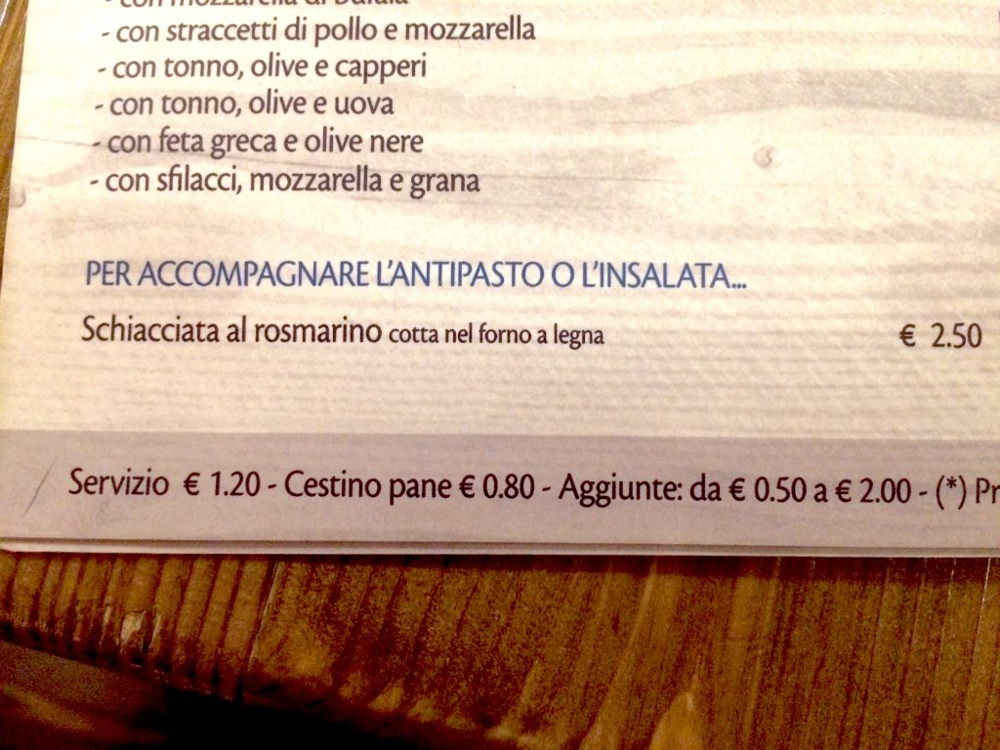

A menu showing the cost of the servizio and the cestino di pane (small bread basket)
In Italian restaurants many times there is a charge called servizio, which is a percentage for the service provided. In other words the tip (mancia) for the waiter (cameriere). This charge is automatically added to the bill (conto), and when this happens it'll say servizio incluso or servizio compreso. If not, it will say servizio non incluso or servizio non compreso. If the servizio is included and it's more than 15%, then the tip is not necessary (unless you want to double-tip the waiter since he has been bravo). On the other hand, if it is not included, adding a 10% to 15% tip (mancia) will make the waiter very happy. You'll find this information either on your bill or on the menu (see photo above). Remember also that the tax is always included in the bill. ***DID YOU KNOW? As the coperto, also the servizio also originated from the past when employment contracts didn’t exist and the restaurant staff was paid in percentage on orders from customers and tables that were served. The servizio was, in fact, the salary of the waiter, but this item remains even today, despite the waiters are paid regularly. *** This is an excerpt from Chapter 3 “Italian cuisine and food establishments” of the eBook “Italy from the Inside. A native Italian reveals the secrets of traveling in Italy”}